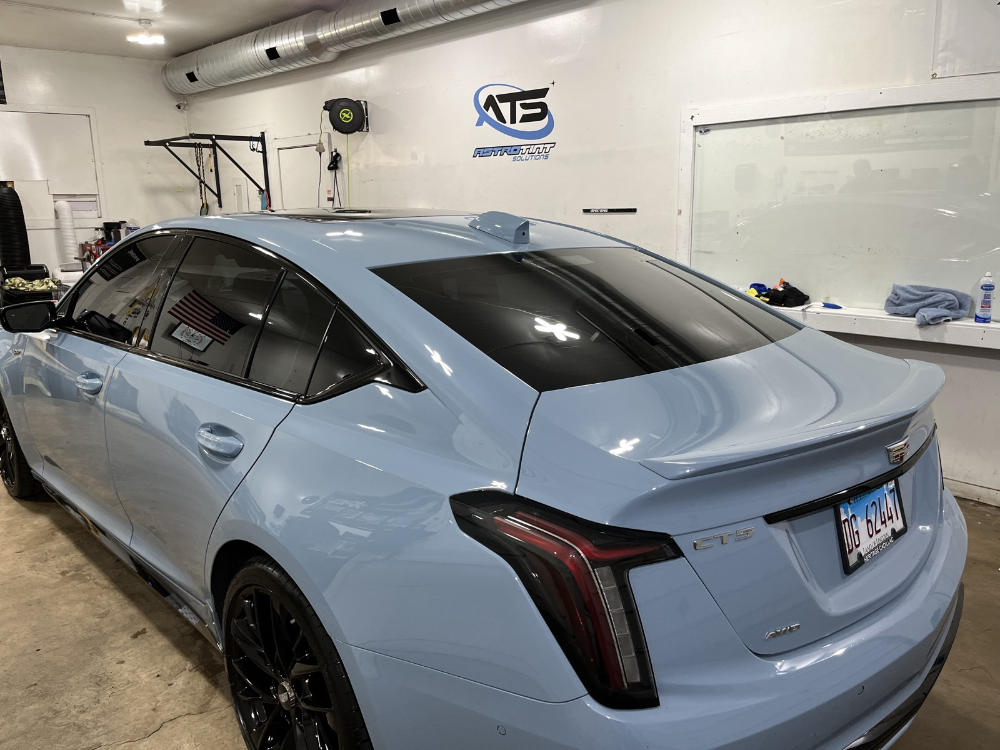

Show-car gloss
The coating bonds to your clear coat for a rich, wet-looking shine that a bottle of wax simply can't match — and it stays that way.
Automotive · Gloss & easy-clean
A liquid nano-coating that bonds to your paint for a deep, glossy finish, hydrophobic water-beading and years of easier washing — protection that lasts far longer than wax.
Deep gloss · Hydrophobic beading · Years of protection

Why ceramic coating
A ceramic coating changes how your paint looks and how it's cared for — for years, not weeks.
The coating bonds to your clear coat for a rich, wet-looking shine that a bottle of wax simply can't match — and it stays that way.
Water and dirt bead up and sheet off. Your car stays cleaner between washes and takes minutes when it's time to rinse it down.
Adds a sacrificial layer against UV, bird droppings, tree sap and light contaminants that would otherwise etch or dull your paint.

Our process
Ceramic coating FAQ
A professionally applied ceramic coating lasts for years with proper care — far longer than wax. We'll recommend a package and maintenance routine based on your vehicle and how you drive.
It bonds to your paint for a deep, glossy finish, repels water and dirt (hydrophobic beading), and adds protection against UV, chemicals and light contaminants — which also makes washing much easier.
Ceramic coating is about gloss, easy cleaning and chemical protection. PPF is a physical shield against rock chips and scratches. Many owners combine them — PPF on the high-impact front end and ceramic over the rest.
Yes, but far less often and far more easily. Dirt and water sheet off the hydrophobic surface, so a coated car stays cleaner and takes minutes to wash.
Ready when you are
Tell us your vehicle and goals. No-pressure pricing, usually the same day.